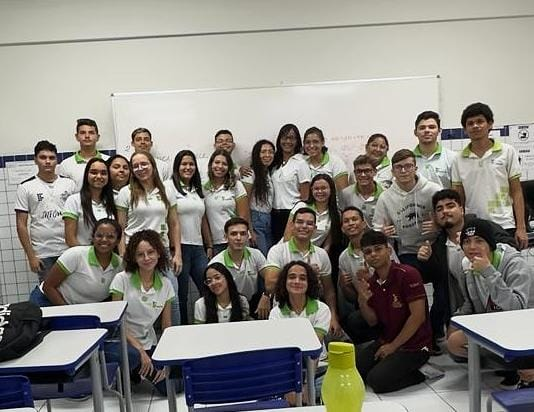

À minha família, meus amigos e todos que fizeram parte dessa jornada, à medida que me aproximo da conclusão deste ciclo da minha vida no IFRN, quero dedicar este momento a todos vocês que estiveram ao meu lado ao longo desses anos de estudo. A jornada acadêmica foi desafiadora, mas cada desafio se tornou mais suportável graças as risadas e apoio que recebi de cada um de vocês. Primeiramente, quero agradecer à minha namorada. Você sempre foi a minha âncora e fonte de desabafo durante esses anos. Obrigado por acreditar em mim, por me incentivar e por nunca duvidar do meu potencial. Aos meus amigos, que compartilharam risos, algumas dores e muitos momentos especiais comigo, quero expressar minha gratidão. Juntos, passamos por muitas coisas, desde intrigas e inimizades até várias conversas verdadeiras e amizades que vou levar para sempre. Aos professores e funcionários do IF, quero agradecer por seu comprometimento com a excelência acadêmica e por nos orientarem em nossa busca pelo conhecimento. Suas palavras de sabedoria e apoio foram fundamentais para o meu crescimento não só em questão de conhecimento mas como também meu amadurecimento como pessoa. Não posso esquecer dos colegas de classe, que se tornaram parte essencial da minha jornada. Juntos, aprendemos, crescemos e nos fortalecemos como grupo, o grupo SHAO. Por fim, agradeço a todos que, de alguma forma, contribuíram para minha formação e para a realização deste sonho. Esta etapa da minha vida não teria sido a mesma sem cada um de vocês. Enquanto embarco em novos desafios e oportunidades que o futuro reserva, levarei comigo as lições aprendidas e as memórias preciosas construídas durante meu tempo no IFRN. Muito obrigado por fazerem parte da minha vida!
